FitNatural: Health & Supplement Tracker
Демонстрація роботи
 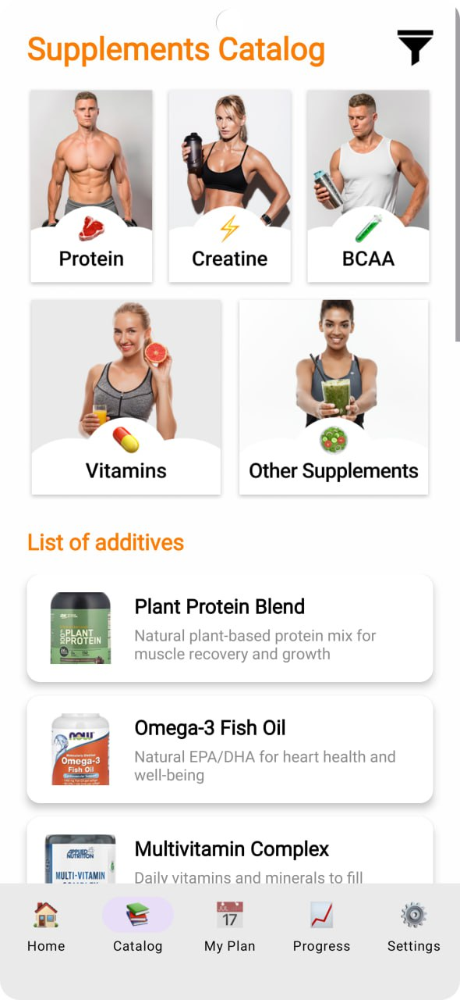
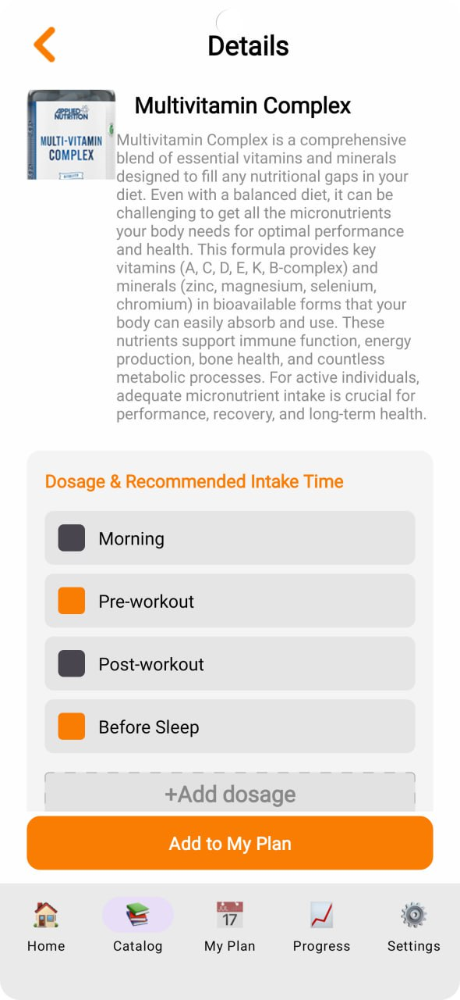
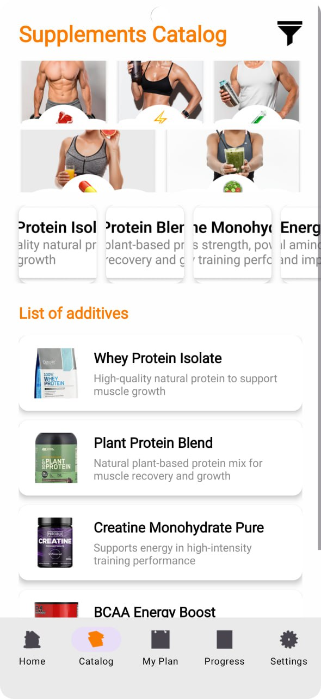
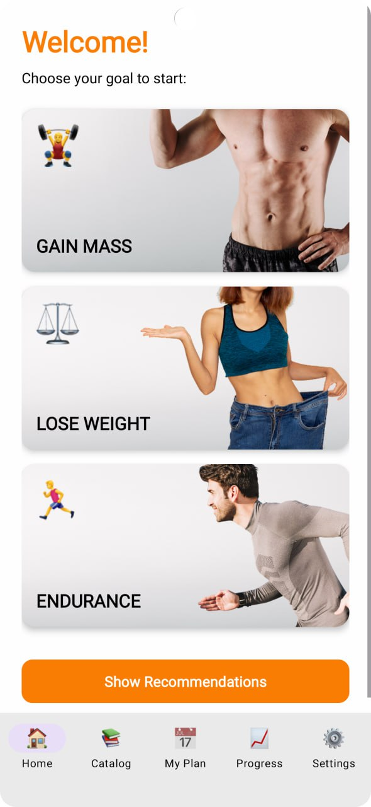
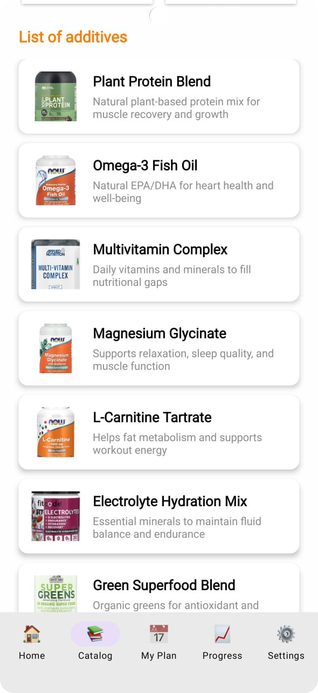
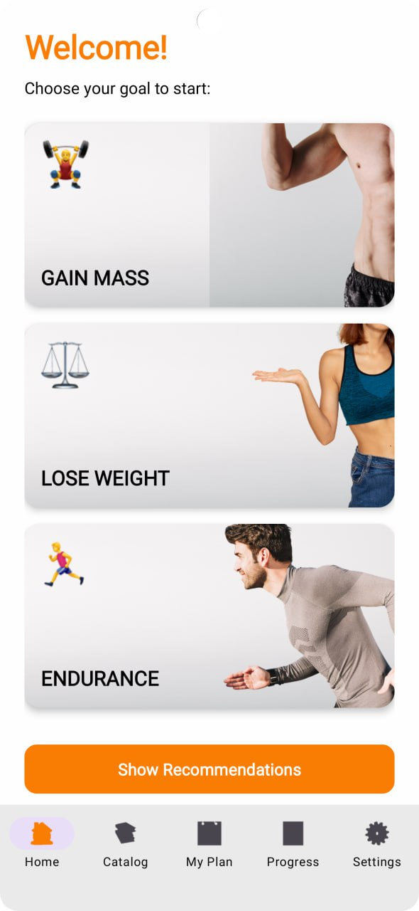
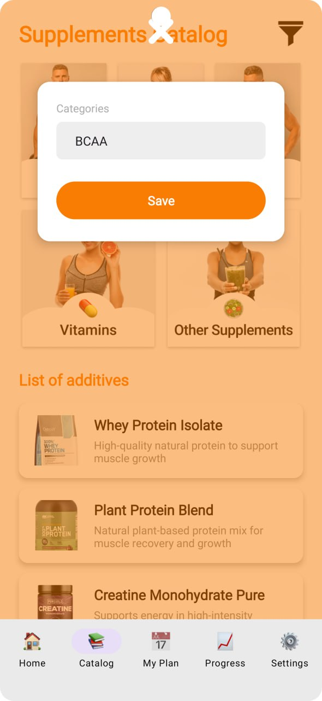
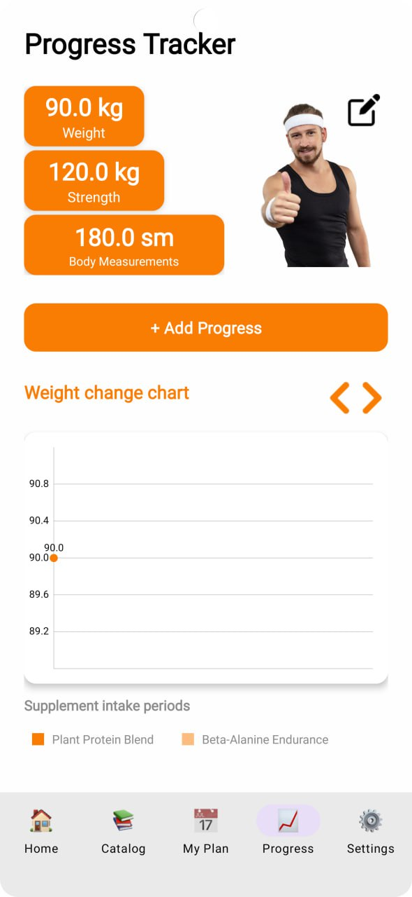
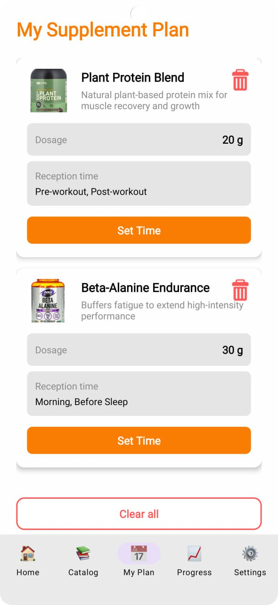
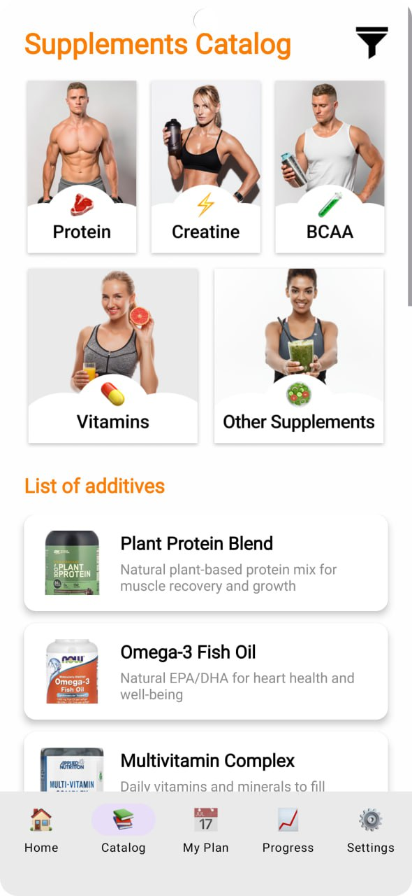
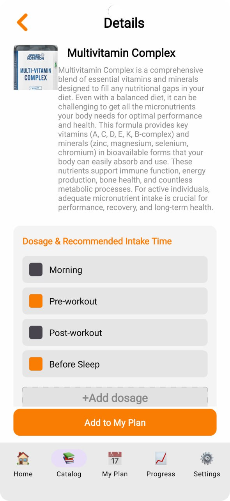
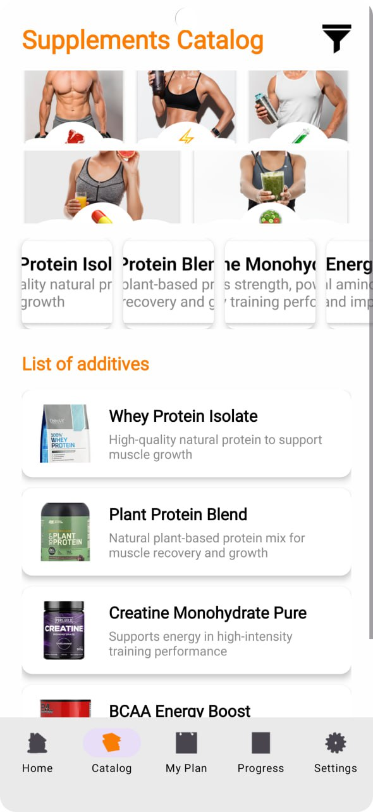
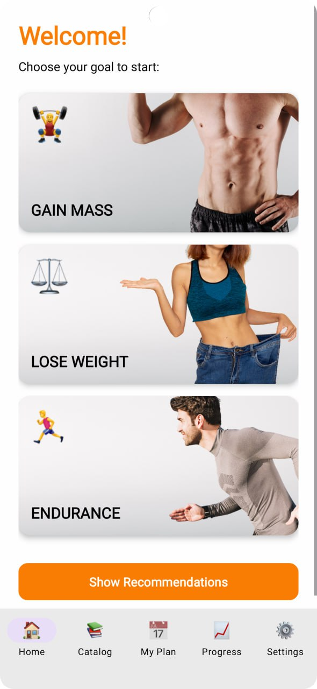
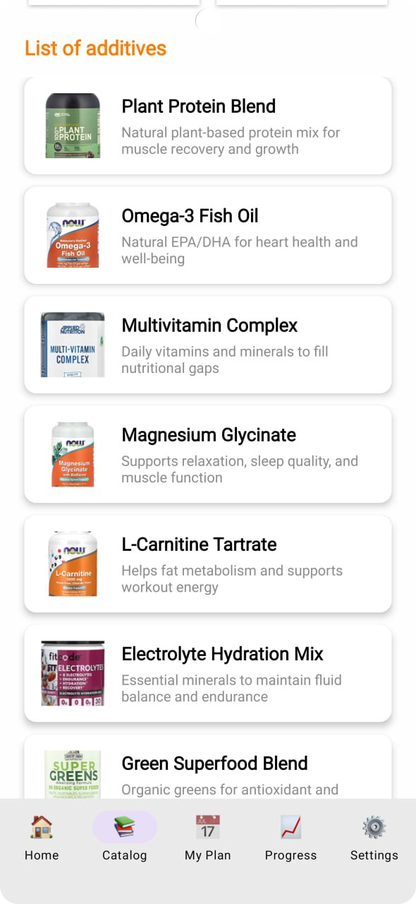
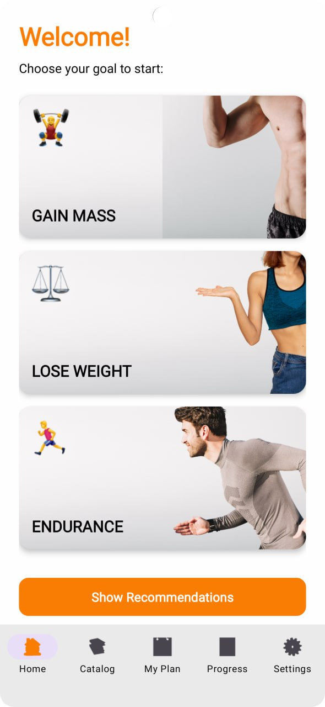
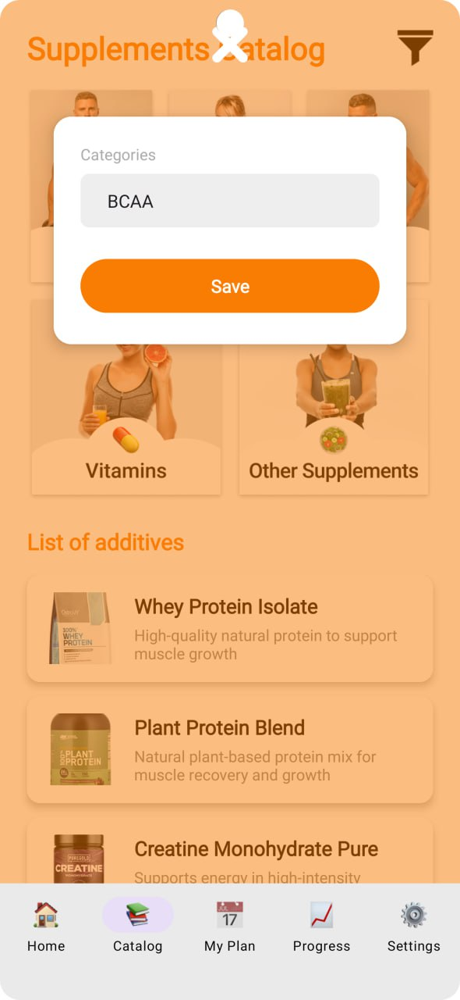
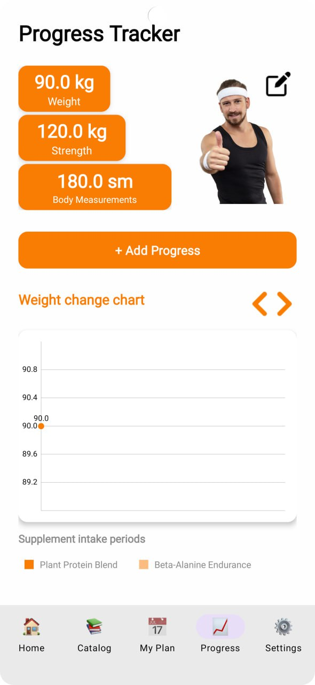
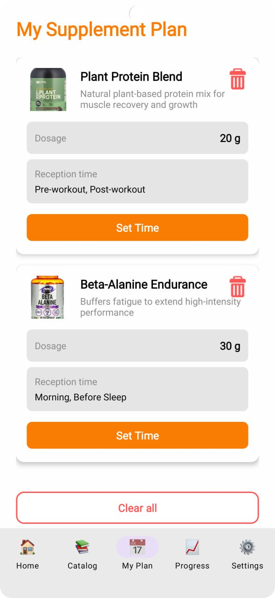
Огляд проєкту
FitNatural — це персональний помічник для спортсменів, що допомагає контролювати прийом добавок та відстежувати фізичні показники. Основна мета проєкту — забезпечити чіткий контроль над режимом без необхідності онлайн-реєстрації.
🔔 Розумні нагадування
Реалізація системи сповіщень через AlarmManager та WorkManager для точного дотримання графіку прийому добавок.
📈 Візуалізація прогресу
Побудова інтерактивних графіків за допомогою бібліотеки MPAndroidChart для аналізу ваги та силових показників.
📂 Локальне сховище
Використання Room Persistence Library для надійного збереження персональних даних, планів та метрик користувача.
Технічні рішення
- User Flow: Реалізовано повний цикл від Onboarding до детальної аналітики за допомогою Navigation Component.
- UI/UX: Адаптація під Luckia-inspired стиль з контрастними закликами до дії (CTA) та логічним групуванням контенту.
- Архітектура: Використання патерну MVVM для чистого розділення бізнес-логіки та відображення.
Висновок
Цей проєкт демонструє навички створення комплексних автономних рішень, роботу з базою даних, чартами та системними сервісами Android для покращення користувацького досвіду в категорії Fitness.